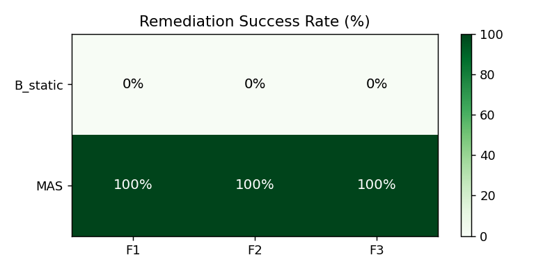
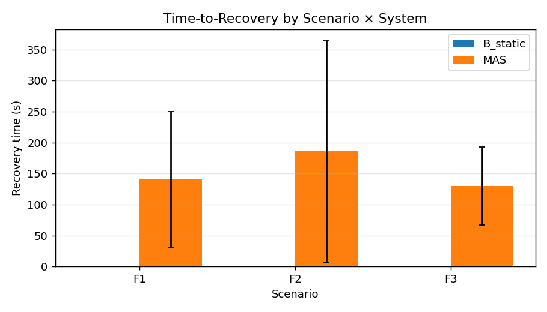
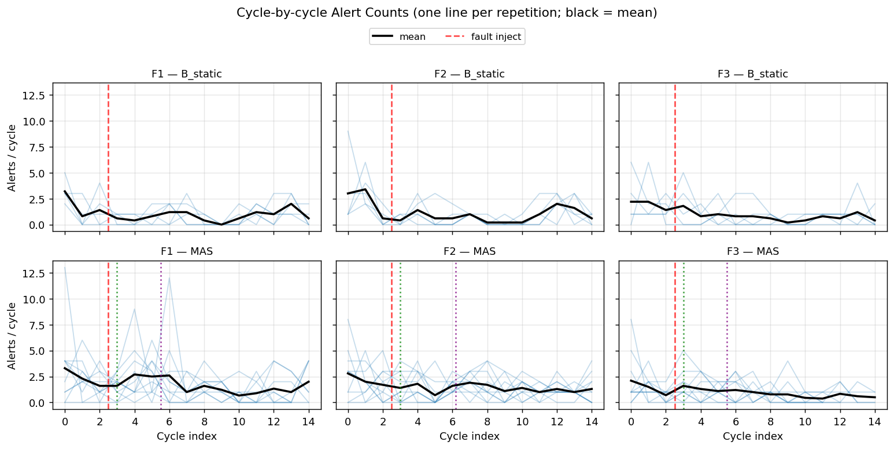

A LangGraph-based MAS that automates the full lifecycle of a 5G Core
— from natural-language intent to autonomous fault remediation.
11
225
4
1,470+
Larbi Saidchikh · Supervisor Meeting · May 2026
Build an autonomous system that takes a natural-language intent and handles everything: plan → configure → deploy → monitor → self-heal.
Instead of:
"Configure AMF with 2 CPU cores, 512Mi RAM, PLMN 208/95, N1/N2 interfaces…"
The system accepts:
"Deploy a 5G core for 500 UEs with 2 Gbps throughput and eMBB slicing."
Triggered once per deployment intent
Runs continuously every 15–30 s
| Component | Details |
|---|---|
| Agentic VM | Python 3.10, LangGraph, Ollama / vLLM, Redis |
| K8s VM | Kubernetes 1.30, OAI 5G Core VNFs, UERANSIM, Prometheus, Grafana |
| Communication | Remote kubectl, Prometheus HTTP API, Helm CLI |
| Key | Writers | Readers |
|---|---|---|
topology:latest | Deployer | Monitoring |
resource_allocation | Deployer | Monitoring |
incidents (cap 500) | Fault Recovery | Planner |
actions (cap 500) | Executors | Planner |
Redis is best-effort — all writes are wrapped in try/except. System runs identically when Redis is down.
0.62
Simple
(6 prompts)
0.61
Medium
(10 prompts)
0.55
Complex
(9 prompts)
0.59
Overall Mean (25 prompts)
Accuracy degrades with complexity — complex intents with ambiguous multi-domain requirements (e.g. "smart hospital with surgical robots") are harder. Identifies where the system needs improvement.
| ID | Approach |
|---|---|
| B1 | Manual operator — hand-written configs |
| B2 | OSM stub — legacy MANO orchestrator |
| B3 | Static HPA — rule-based auto-scaler only |
| B4 | Single LLM agent — no decomposition |
| System | Accuracy | n |
|---|---|---|
| B1 Manual | 0.000 | 180 |
| B2 OSM | 0.000 | 180 |
| B3 Static HPA | 0.000 | 180 |
| B4 Single LLM | 0.000 | 180 |
| MAS (ours) | 0.683 | 180 |
All baselines score 0 because they cannot satisfy the joint condition: deployment success + VNF coverage + policy pass + critic approval.
7 specific intents account for most failures: slice-count mismatch (3), missing core VNFs (1), coverage threshold too strict (3). Three deterministic fixes could lift accuracy to ~0.78–0.85.
| Model | Size | Config Intent Acc ↑ | Plan Time (s) ↓ |
|---|---|---|---|
| Llama 3.2 | 3B | 0.167 | 5.7 |
| Gemma 3 | 4B | 0.411 | 11.0 |
| Qwen2.5 | 7B | 0.383 | 11.9 |
| Qwen2.5 | 14B ★ | 0.694 | 18.6 |
| Mistral 3.1 | 22B | 0.700 | 33.4 |
| Qwen3-Coder | 30B | 0.700 | 19.9 |
| GPT-OSS | 120B | 0.622 | 158.9 |
Qwen2.5 14B is 8.5× faster than 120B (18.6s vs 158.9s) with higher accuracy (0.694 vs 0.622).
Statistically confirmed: paired Bonferroni p < 0.001 vs 7B. No significant difference vs 22B / 30B / 120B (all p = 1).
| ID | Fault | Target | Mechanism |
|---|---|---|---|
| F1 | CPU spike | AMF | stress-ng pod on same node, 4 cores × 60 s |
| F2 | Pod crash | UPF | kubectl delete pod --force |
| F3 | Traffic surge | UPF | iperf3 client, 50 parallel streams × 60 s |
5 reps × 3 scenarios × 2 systems = 30 runs. Each run: 2 baseline cycles → fault inject → 12 recovery cycles (15 s each).
15/15
MAS — Full Pipeline
All 3 scenarios × 5 reps
0/15
B_static — No Planner
HPA only, loop never closes
Fisher exact p < 10⁻⁶ — statistically unambiguous
| Scenario | Detection (s) | Recovery (s) |
|---|---|---|
| F1 — CPU spike | 6.4 ± 14.2 | 71.1 ± 13.8 |
| F2 — Pod crash | 39.1 ± 37.4 | 82.5 ± 13.3 |
| F3 — Traffic surge | 13.8 ± 30.8 | 78.7 ± 31.7 |
All 3 scenarios recover in ~70–85 seconds — stable settling time regardless of fault type.

Fig 1 — Success heatmap: MAS=100%, B_static=0% across all cells

Fig 2 — Recovery time per scenario (MAS only, ~70–85 s)

Cycle-by-cycle alert count — one line per rep, bold = mean. Red = fault inject. Top row = B_static, Bottom = MAS.
This is the most communicative single figure in the experiment — it shows detection → planning → action → settling in one image.
22.4% LLM / 77.6% heuristic across all plans. LLM share grows with complexity: F1 10% → F2 20% → F3 39%. The system is architecture-driven, not LLM-dependent.
First alert is always the trigger fingerprint (Δ = 0 across all 30 runs). Latency dominated by Prometheus 30s scrape jitter, not architecture — no meaningful MAS vs B_static difference expected or found.
14B threshold statistically confirmed: Cohen's d = −0.69, p_bonf < 0.001 vs 7B. Plateau past 14B confirmed: all 14B-vs-larger comparisons p = 1, |d| ≤ 0.14.
The 31.7% failure rate is not random — 7 intents account for most. Three root causes: slice-count mismatch, missing core VNFs, coverage threshold. Three deterministic fixes → projected +0.10–0.17 accuracy lift.
| VNF | Accuracy |
|---|---|
| NSSF / NRF (control plane) | 0.89–0.92 |
| UDR / AUSF / UDM / AMF / SMF | 0.70–0.80 |
| UPF (data plane) | 0.63 ← hardest |
Cycle-by-cycle visualization confirms: baseline noise floor ~2 alerts, spike at injection, MAS settles in ~3 cycles post-action, B_static never settles. The most communicative figure in the thesis.
68.3% intent-to-deploy accuracy vs 0% for all 4 baselines. The multi-agent decomposition is what makes the difference — no existing tool passes the joint condition (deploy + coverage + policy + critic).
Qwen2.5 14B matches or beats the 120B model at 8.5× lower latency. Statistically confirmed with p_bonf < 0.001. Practical for on-premises telco deployments.
100% remediation success across all 3 fault types and all 15 runs. B_static recovers on 0/15. The planner-and-executor segment is the differentiator, not the detector alone.
The MAS is heuristic-dominated (77.6% of plans). The LLM's value is scenario-dependent: marginal on simple faults, dominant on complex traffic surge. The architecture works even without a strong LLM.
Bottom line: A multi-agent system with deterministic guard rails and a 14B LLM can autonomously handle the full 5G lifecycle — from a natural-language prompt to live fault recovery — with no human intervention.
| Component | Status |
|---|---|
| All 11 agents (5 pre + 6 post) | Done |
| LangGraph orchestration + HITL | Done |
| Remote K8s + Prometheus integration | Done |
| Redis shared state | Done |
| 225 unit tests | All passing |
| Experiment 1 — Intent accuracy | Done |
| Experiment 2 — MAS vs 4 baselines | Done |
| Experiment 3 — LLM size comparison | Done |
| Experiment 4 — Closed-loop runtime | Done |
| 6 additional statistical analyses | Done |